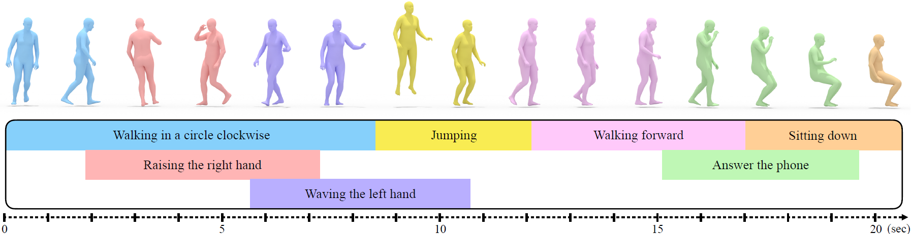

CVPR Workshop on Human Motion Generation (CVPR Workshop 2024)
Mathis Petrovich (1, 2)Or Litany (3, 4)Umar Iqbal (3)Michael J. Black (2)Gul Varol (1)Xue Bin Peng (3, 5)Davis Rempe (3)
(1) LIGM, École des Ponts, Univ Gustave Eiffel, CNRS(2) Max Planck Institute for Intelligent Systems, Tübingen(3) NVIDIA(4) Technion(5) Simon Fraser University

Abstract
Recent advances in generative modeling have led to promising
progress on synthesizing 3D human motion from text, with
methods that can generate character animations from short
prompts and specified durations. However, using a single text
prompt as input lacks the fine-grained control needed by animators,
such as composing multiple actions and defining precise
durations for parts of the motion. To address this, we introduce
the new problem of timeline control for text-driven motion
synthesis, which provides an intuitive, yet fine-grained, input
interface for users. Instead of a single prompt, users can specify
a multi-track timeline of multiple prompts organized in temporal
intervals that may overlap. This enables specifying the
exact timings of each action and composing multiple actions
in sequence or at overlapping intervals. To generate composite
animations from a multi-track timeline, we propose a new
test-time denoising method. This method can be integrated with
any pre-trained motion diffusion model to synthesize realistic
motions that accurately reflect the timeline. At every step of
denoising, our method processes each timeline interval (text
prompt) individually, subsequently aggregating the predictions
with consideration for the specific body parts engaged in each
action. Experimental comparisons and ablations validate that
our method produces realisticmotions that respect the semantics
and timing of given text prompts.
@inproceedings{
petrovich24stmc,
title = {Multi-Track Timeline Control for Text-Driven 3D Human Motion Generation},
author = {Petrovich, Mathis and Litany, Or and Iqbal, Umar and Black, Michael J. and Varol, G{\"u}l and Peng, Xue Bin and Rempe, Davis},
booktitle = {CVPR Workshop on Human Motion Generation},
year = {2024}
}